13 探索的因子分析
13.1 基本操作
データセット1: 従業員評価データ (仮想)
ここでは, 上のPCAで使用した”testdat3_jap.csv”の拡大版を使用する. (文字化けする場合には, 英語版”testdat_eng.csv”を使用しても良い.)
"testdat_30_jap.csv" (日本語版/英語版)
- 氏名/Name
- 専門性/Expertise (0-100)
- 分析力/Analytics (同)
- リーダーシップ/Leadership (同)
- プレゼン力/Presentation (同)
- コミュ力/Communication (同)
- n = 30, p = 5Rで標準的に用意されている関数factanal()を使用する.
# (1) factanal: 最尤法only
tokuten <- read.csv("testdat_30_jap.csv", header = T, row.names = 1, skip = 1)
# tokuten <- read.csv('testdat_30_eng.csv', header = T, row.names = 1, skip =
# 1) tokuten <- read.csv('testdat_jap.csv', header = T, row.names = 1, skip =
# 1)
tokuten_fac <- factanal(tokuten, factors = 2) # default varimax回転
tokuten_fac
tokuten_fac$loading
# 確認(各因子のloadingsベクトルの2乗和--> SS loadings))
sum(tokuten_fac$loading[, 1]^2)
#>
#> Call:
#> factanal(x = tokuten, factors = 2)
#>
#> Uniquenesses:
#> 専門性 分析力 リーダーシップ プレゼン力 コミュ力
#> 0.849 0.238 0.005 0.208 0.100
#>
#> Loadings:
#> Factor1 Factor2
#> 専門性 0.172 0.349
#> 分析力 -0.368 0.792
#> リーダーシップ 0.980 -0.186
#> プレゼン力 0.890
#> コミュ力 0.936 0.153
#>
#> Factor1 Factor2
#> SS loadings 2.794 0.807
#> Proportion Var 0.559 0.161
#> Cumulative Var 0.559 0.720
#>
#> Test of the hypothesis that 2 factors are sufficient.
#> The chi square statistic is 4.44 on 1 degree of freedom.
#> The p-value is 0.0351
#>
#> Loadings:
#> Factor1 Factor2
#> 専門性 0.172 0.349
#> 分析力 -0.368 0.792
#> リーダーシップ 0.980 -0.186
#> プレゼン力 0.890
#> コミュ力 0.936 0.153
#>
#> Factor1 Factor2
#> SS loadings 2.794 0.807
#> Proportion Var 0.559 0.161
#> Cumulative Var 0.559 0.720
#> [1] 2.794063# 因子負荷量barplot(factor loadings)
par(mfrow = c(1, 2))
barplot(tokuten_fac$loading[, 1], col = "orange")
barplot(tokuten_fac$loading[, 2], col = "lightblue")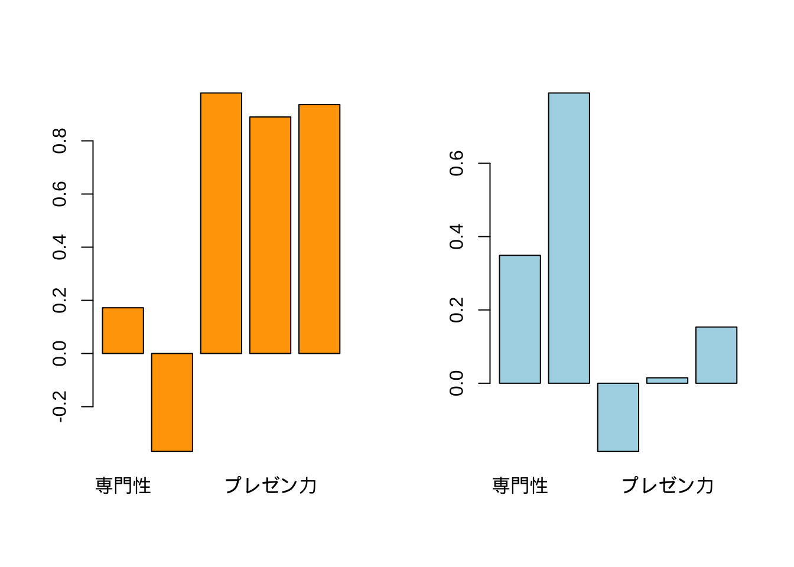
Tips: プロット時, 日本語が文字化けする場合の対応 (特に, macユーザー):
> par(family = "HiraKakuProN-W3")
または,
> par(family = "HG明朝E")# 因子（負荷量）行列の回転 scores = 'regression' ==> Thomson's score返す
# （デフォルト, 戻り値無)
tokuten_fac2 <- factanal(tokuten, factors = 2, rotation = "none", scores = "regression") # 回転なし
tokuten_fac3 <- factanal(tokuten, factors = 2, rotation = "promax", scores = "regression") # promax回転（斜交回転)
tokuten_fac4 <- factanal(tokuten, factors = 2, scores = "regression") # varimax回転（直交回転)# 因子得点(factor scores)
tokuten_fac2$scores
#> Factor1 Factor2
#> 山田 -1.26800407 0.38570292
#> 鈴木 -1.95989876 0.01060196
#> 田中 0.20645006 -1.63631682
#> 中村 0.91696834 -1.38312209
#> 大野 0.96895473 1.74205043
#> 小林 0.09169331 0.01065859
#> 伊藤 -0.48179366 0.42756367
#> 高橋 0.93201465 -0.89712752
#> 渡辺 -0.22275387 0.27605947
#> 佐藤 -0.35296159 -0.25515430
#> 山下 1.22524580 -0.78746751
#> 木村 0.80403959 -0.04966399
#> 山本 -0.22649622 0.19899511
#> 宮崎 1.67523625 -0.20442665
#> 山口 -1.12973504 0.24392701
#> 阿部 1.54630529 -0.22549756
#> 斎藤 -0.75968450 1.72490202
#> 吉田 -1.68984987 -1.46995307
#> 佐々木 -0.80152021 -0.47761662
#> 石川 0.66965259 0.60177580
#> 山崎 -0.66802546 -0.35549465
#> 中山 0.78533445 0.67322981
#> 藤田 -0.77928205 0.88172247
#> 加藤 -0.83886445 -0.82003132
#> 清水 0.53238028 1.91115337
#> 池田 0.49224657 -0.22365300
#> 井上 -0.63623615 -0.04435814
#> 林 -0.94437205 0.48040513
#> 中島 0.21941624 -1.01764392
#> 森 1.69353978 0.27877943
tokuten_fac3$scores
#> Factor1 Factor2
#> 山田 -1.03462508 0.66053651
#> 鈴木 -1.83144475 0.43930549
#> 田中 -0.45570109 -1.67056983
#> 中村 0.31020607 -1.57450638
#> 大野 1.59853100 1.51845067
#> 小林 0.09010822 -0.00947258
#> 伊藤 -0.28165229 0.53011595
#> 高橋 0.51707362 -1.09504471
#> 渡辺 -0.09913025 0.32295107
#> 佐藤 -0.43179522 -0.17623394
#> 山下 0.83521312 -1.05026730
#> 木村 0.73336738 -0.22523546
#> 山本 -0.13320378 0.24721940
#> 宮崎 1.48794583 -0.56956087
#> 山口 -0.96135865 0.48945650
#> 阿部 1.35883050 -0.56228456
#> 斎藤 -0.02732251 1.87959737
#> 吉田 -2.16579425 -1.09045510
#> 佐々木 -0.94015940 -0.29907982
#> 石川 0.86590070 0.45126013
#> 山崎 -0.76668658 -0.20697743
#> 中山 1.00259189 0.49692945
#> 藤田 -0.38013416 1.04632852
#> 加藤 -1.11095876 -0.63104097
#> 清水 1.25670992 1.78193683
#> 池田 0.37232594 -0.32985202
#> 井上 -0.61349683 0.09512940
#> 林 -0.69394517 0.68380497
#> 中島 -0.19815346 -1.05885961
#> 森 1.69675803 -0.09358169
tokuten_fac4$scores
#> Factor1 Factor2
#> 山田 -1.18038461 0.602738127
#> 鈴木 -1.92747306 0.355194538
#> 田中 -0.08460701 -1.647117489
#> 中村 0.65937060 -1.522855235
#> 大野 1.26028286 1.544441669
#> 小林 0.09213844 -0.005637015
#> 伊藤 -0.39907004 0.505647037
#> 高橋 0.75967163 -1.047085528
#> 渡辺 -0.17071995 0.310938604
#> 佐藤 -0.39234102 -0.189087623
#> 山下 1.06762028 -0.990716564
#> 木村 0.78276599 -0.190324936
#> 山本 -0.18796003 0.235734215
#> 宮崎 1.61315438 -0.495923070
#> 山口 -1.06921083 0.438850587
#> 阿部 1.48252735 -0.493985703
#> 斎藤 -0.44441816 1.831638615
#> 吉田 -1.92207351 -1.149777378
#> 佐々木 -0.87303770 -0.329176947
#> 石川 0.76506664 0.474596410
#> 山崎 -0.72014255 -0.232441752
#> 中山 0.89151385 0.524587102
#> 藤田 -0.61203044 1.005054108
#> 加藤 -0.97003241 -0.659683285
#> 清水 0.86026215 1.787703833
#> 池田 0.44522905 -0.306754687
#> 井上 -0.63411816 0.068251272
#> 林 -0.84514031 0.639034836
#> 中島 0.03698524 -1.040372398
#> 森 1.71617133 -0.023471343# 因子負荷量(factor loadings)
tokuten_fac2$loading
#>
#> Loadings:
#> Factor1 Factor2
#> 専門性 0.108 0.374
#> 分析力 -0.502 0.715
#> リーダーシップ 0.997
#> プレゼン力 0.873 0.171
#> コミュ力 0.895 0.316
#>
#> Factor1 Factor2
#> SS loadings 2.821 0.780
#> Proportion Var 0.564 0.156
#> Cumulative Var 0.564 0.720
tokuten_fac3$loading
#>
#> Loadings:
#> Factor1 Factor2
#> 専門性 0.249 0.348
#> 分析力 -0.186 0.820
#> リーダーシップ 0.930 -0.229
#> プレゼン力 0.886
#> コミュ力 0.963 0.118
#>
#> Factor1 Factor2
#> SS loadings 2.675 0.859
#> Proportion Var 0.535 0.172
#> Cumulative Var 0.535 0.707
tokuten_fac4$loading
#>
#> Loadings:
#> Factor1 Factor2
#> 専門性 0.172 0.349
#> 分析力 -0.368 0.792
#> リーダーシップ 0.980 -0.186
#> プレゼン力 0.890
#> コミュ力 0.936 0.153
#>
#> Factor1 Factor2
#> SS loadings 2.794 0.807
#> Proportion Var 0.559 0.161
#> Cumulative Var 0.559 0.720
# tokuten_fac$loading# 因子得点と因子負荷量のbiplot biplot(tokuten_fac2$scores,
# tokuten_fac2$loading) biplot(tokuten_fac3$scores, tokuten_fac3$loading)
# biplot(tokuten_fac4$scores, tokuten_fac4$loading)
biplot(tokuten_fac2$scores, tokuten_fac2$loading, family = "HiraKakuProN-W3", main = "無回転") # 日本語文字化け対応 (mac)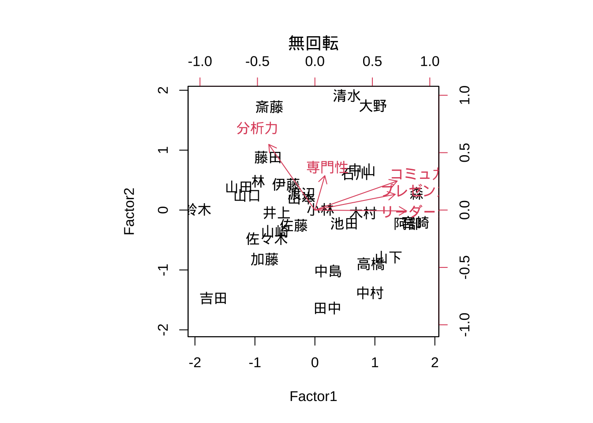
biplot(tokuten_fac3$scores, tokuten_fac3$loading, family = "HiraKakuProN-W3", main = "promax回転") # 日本語文字化け対応 (mac)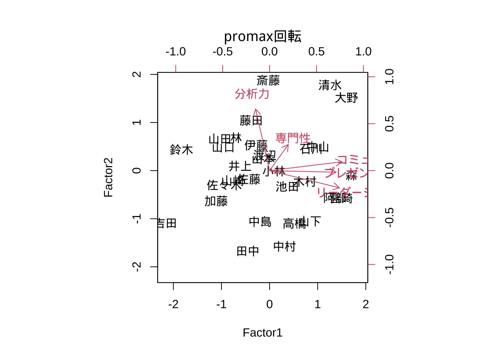
biplot(tokuten_fac4$scores, tokuten_fac4$loading, family = "HiraKakuProN-W3", main = "varimax回転") # 日本語文字化け対応 (mac)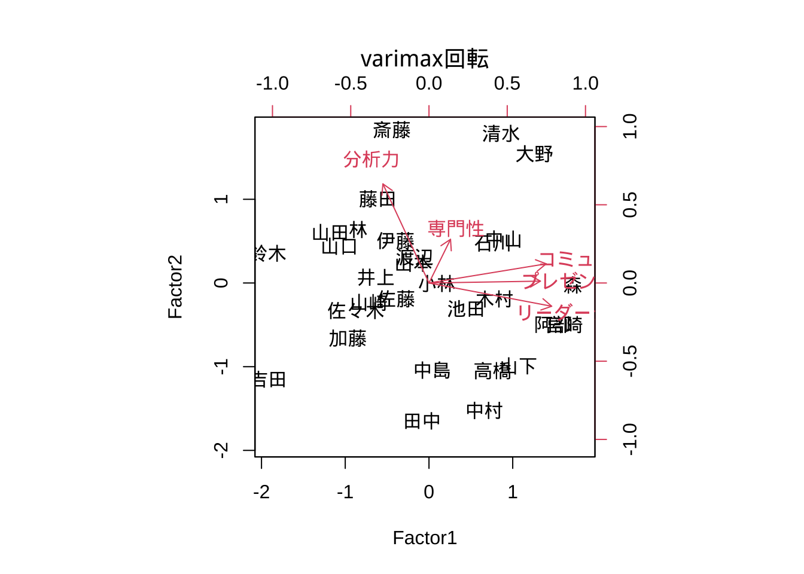
13.2 ライブラリpsychの利用
- 関数
psych()では, モデル推定方法や因子負荷行列の回転方法等に選択肢がある.
- モデル推定方法 (引数fm=): 最尤法 ("ml"), 一般化最小2乗法 ("gls"), 重み付き最小2乗法 ("gls"), 最小残差法 ("mires"). デフォルトは"mires"
- 回転方法 (引数rotate=): オブリミン ("oblimin"), バリマックス("varimax")など.library(psych)
# 主因子法
tokuten_fa <- fa(r = tokuten, nfactors = 2, rotate = "none", fm = "pa", scores = T) # 回転なし
tokuten_fa2 <- fa(r = tokuten, nfactors = 2, rotate = "oblimin", fm = "pa", scores = T) #
# tokuten_fa <- fa(r = tokuten, nfactors = 2 , rotate = 'none', fm = 'ml',
# scores = T) デフォルト: rotate = 'oblimin', fm = 'minres' 最尤法, fm = 'ml',
# 一般化最小2乗法, 'gls', 重み付き最小2乗法'gls', 最小残差法'mires'
# PCAとの比較 tokuten_fa\t\t# standardized loadings (pattern matrix)表示
summary(tokuten_fa)
tokuten_fa2$loadings
tokuten_fa$scores
par(mfrow = c(1, 2))
# plot(tokuten_fa) plot(tokuten_fa2)
biplot(tokuten_fa, main = "無回転")
biplot(tokuten_fa2, main = "oblimin回転")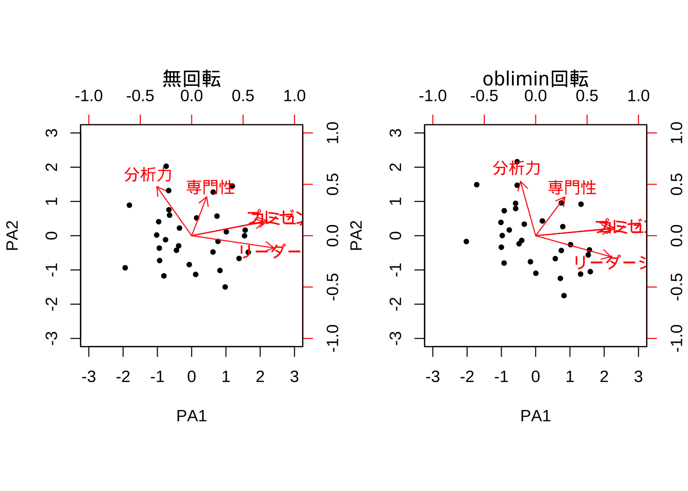
par(mfrow = c(1, 1))
#>
#> Factor analysis with Call: fa(r = tokuten, nfactors = 2, rotate = "none", scores = T, fm = "pa")
#>
#> Test of the hypothesis that 2 factors are sufficient.
#> The degrees of freedom for the model is 1 and the objective function was 0.35
#> The number of observations was 30 with Chi Square = 8.79 with prob < 0.003
#>
#> The root mean square of the residuals (RMSA) is 0.04
#> The df corrected root mean square of the residuals is 0.12
#>
#> Tucker Lewis Index of factoring reliability = 0.163
#> RMSEA index = 0.508 and the 10 % confidence intervals are 0.245 0.856
#> BIC = 5.39
#> Loadings:
#> PA1 PA2
#> 専門性 0.355 0.470
#> 分析力 -0.184 0.660
#> リーダーシップ 0.911 -0.255
#> プレゼン力 0.958
#> コミュ力 0.914
#>
#> PA1 PA2
#> SS loadings 2.744 0.738
#> Proportion Var 0.549 0.148
#> Cumulative Var 0.549 0.696
#> PA1 PA2
#> 山田 -1.02034162 0.019100487
#> 鈴木 -1.81609325 0.890601637
#> 田中 0.11710274 -1.131035071
#> 中村 0.97786615 -1.497888977
#> 大野 1.18686813 1.448453889
#> 小林 0.14568067 0.518419196
#> 伊藤 -0.66256206 0.755510959
#> 高橋 0.82501884 -1.016144138
#> 渡辺 -0.37950698 -0.296849891
#> 佐藤 -0.35540858 0.222170566
#> 山下 1.38305140 -0.665023036
#> 木村 0.62270049 -0.476316678
#> 山本 -0.44361495 -0.426060496
#> 宮崎 1.64994564 -0.484538347
#> 山口 -0.76190378 -0.118039940
#> 阿部 1.56078515 0.162024351
#> 斎藤 -0.74336529 2.028239692
#> 吉田 -1.93942159 -0.937774682
#> 佐々木 -0.94328316 -0.363190871
#> 石川 0.73867734 0.571203066
#> 山崎 -0.93450472 -0.725912234
#> 中山 1.01147500 0.113093275
#> 藤田 -0.67086121 1.318200214
#> 加藤 -0.80985800 -1.173736127
#> 清水 0.62804134 1.271351417
#> 池田 0.76781783 -0.165605242
#> 井上 -0.64479954 0.598812374
#> 林 -0.96156230 0.407994217
#> 中島 -0.06969367 -0.843983587
#> 森 1.54175000 -0.00307602313.3 因子分析に有用なツール
ライブラリpsychの関数fa.parallel(), vss()は, 因子数の決定に有用である.
# library(psych) 平行分析(parallel analysis) デフォルト: fm = 'minres'
(res_parallel <- fa.parallel(tokuten)) # minres法(デフォルト), PCA & 因子分析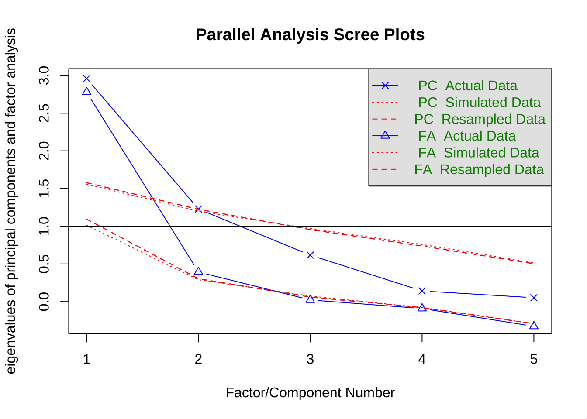
# fa.parallel(tokuten, fm = 'wls') fa.parallel(tokuten, fm = 'ml', fa =
# 'fa')\t# 最尤法+因子分析(のみ)実行 サンプルデータから作られるscreeプロットと,
# シミュレーションデータの行列(サンプルと同じサイズ)のscreeプロットとを比較 →
# 因子数をsuggest fa = 'both' (デフォルト): \t\t# PCA,
# 主因子法の固有値を同時に表示
# VSS (Very Simple Structure) 規準 Very Simple Structure criterion ( VSS) for
# estimating the optimal number of factors 最大となる因子数を探す (tokuten_vss
# <- vss(tokuten, n = 5, rotate = 'oblimin', fm = 'wls')\t)\t# n: Number of
# factors to extract (> (初期仮説の)因子数) デフォルト: # 因子数 n = 8, 回転
# rotate = 'varimax' → VSS, MAP, その他の因子数決定基準の数値を表示
tmp_vss <- vss(tokuten, n = 4, fm = "ml")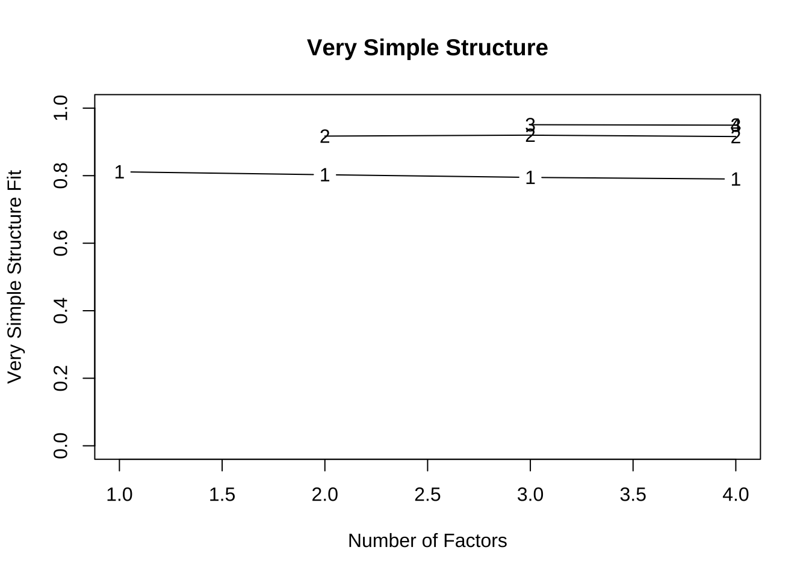
# VSS.plot(tmp_vss)
print(tmp_vss)
#> Parallel analysis suggests that the number of factors = 2 and the number of components = 1
#> Call: fa.parallel(x = tokuten)
#> Parallel analysis suggests that the number of factors = 2 and the number of components = 1
#>
#> Eigen Values of
#> Original factors Resampled data Simulated data Original components
#> 1 2.78 1.09 1.01 2.96
#> 2 0.39 0.30 0.29 1.23
#> Resampled components Simulated components
#> 1 1.58 1.56
#> 2 1.22 1.20
#>
#> Very Simple Structure
#> Call: vss(x = tokuten, n = 4, fm = "ml")
#> VSS complexity 1 achieves a maximimum of 0.81 with 1 factors
#> VSS complexity 2 achieves a maximimum of 0.92 with 3 factors
#>
#> The Velicer MAP achieves a minimum of 0.15 with 1 factors
#> BIC achieves a minimum of 1.04 with 2 factors
#> Sample Size adjusted BIC achieves a minimum of 4.15 with 2 factors
#>
#> Statistics by number of factors
#> vss1 vss2 map dof chisq prob sqresid fit RMSEA BIC SABIC complex
#> 1 0.81 0.00 0.15 5 2.1e+01 0.00083 2.01 0.81 0.32 3.9 19.5 1.0
#> 2 0.80 0.92 0.27 1 4.4e+00 0.03506 0.88 0.92 0.34 1.0 4.2 1.2
#> 3 0.79 0.92 0.45 -2 0.0e+00 NA 0.52 0.95 NA NA NA 1.5
#> 4 0.79 0.92 1.00 -4 2.1e-14 NA 0.54 0.95 NA NA NA 1.5
#> eChisq SRMR eCRMS eBIC
#> 1 1.1e+01 1.4e-01 0.19 -5.7
#> 2 1.6e+00 5.2e-02 0.16 -1.8
#> 3 7.8e-17 3.6e-10 NA NA
#> 4 1.7e-14 5.3e-09 NA NAライブラリpsych内の関数fa.plot()やfa.diagram()は, 因子間の関係性 (相関構造や階層構造) を調べるのに有用である.
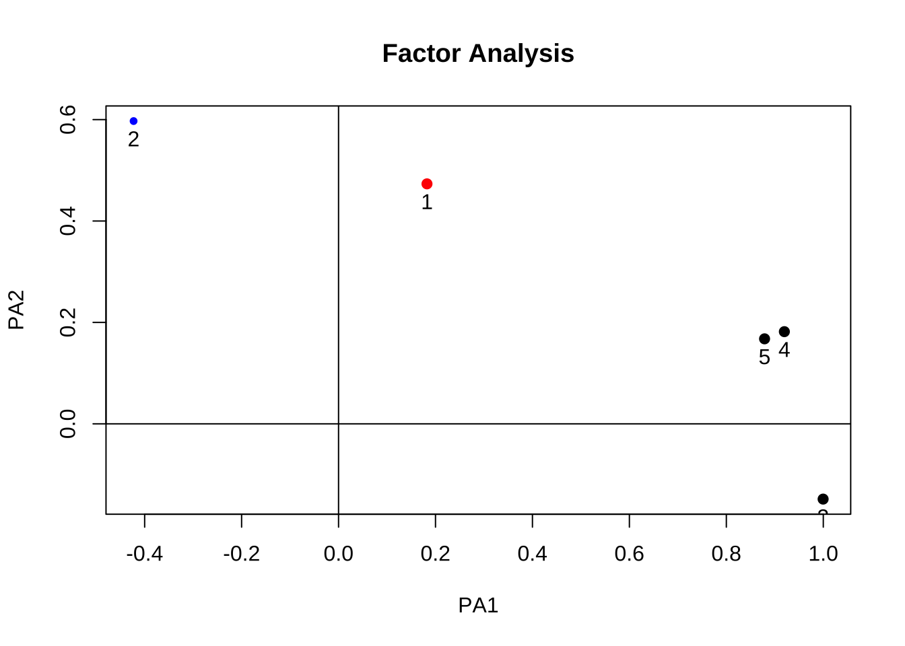
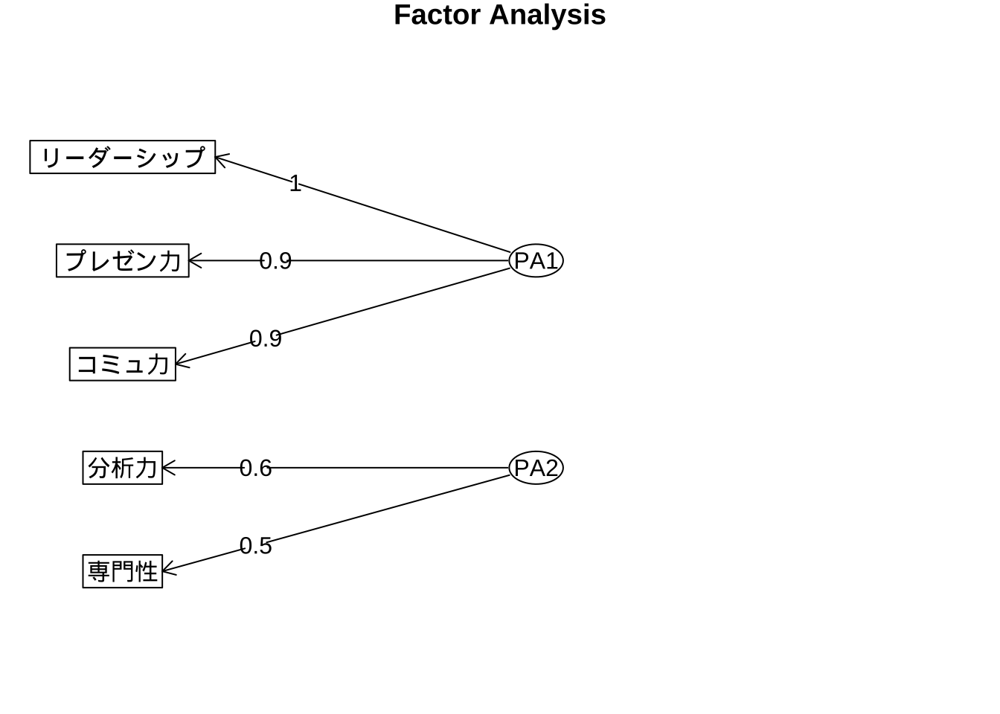
また, ライブラリqgraphの関数qgraph()も同様な目的で有用である.
# 相関ネットワーク(参考)
library(qgraph)
qgraph(cor(tokuten), edge.labels = T, minimum = 0.2, edge.color = "black")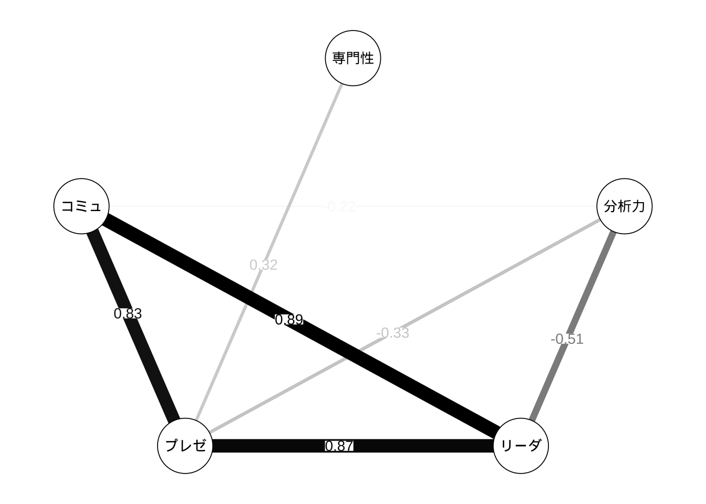
データセット#2: TOPIX Core30 月次リターン
TOPIX Core30, 月次リターン, 2014/11〜2022/1 (n = 87, p = 33)
- 年月(yyyymm)
- 日経平均リターン (nk225)
- TOPIXリターン (topix)
- 以降, core30採用銘柄のリターン (s3382〜s9984)データセットの第1列が年月を表す文字列であるため, Date型に変換する (因子分析には直接は関係なし).
core30_0 <- read.csv("core30_201411-202201.csv")
str(core30_0)
#> 'data.frame': 87 obs. of 33 variables:
#> $ yyyymm: chr "2014/11" "2014/12" "2015/01" "2015/02" ...
#> $ nk225 : num 0.06178 -0.00052 0.01273 0.06163 0.02153 ...
#> $ topix : num 0.05592 -0.00201 0.00536 0.07406 0.01256 ...
#> $ s3382 : num 0.03376 -0.01571 -0.00483 0.05297 0.09959 ...
#> $ s4063 : num 0.12601 -0.01564 -0.00229 0.04424 -0.04399 ...
#> $ s4452 : num 0.0209 0.0789 0.0854 0.0321 0.1147 ...
#> $ s4502 : num 0.03417 0.00502 0.16662 0.03659 -0.02046 ...
#> $ s4503 : num 0.0047 -0.0118 0.0814 0.0381 0.0346 ...
#> $ s4568 : num 0.0546 -0.0349 0.0141 0.0888 0.0191 ...
#> $ s6098 : num 0.0537 -0.1252 0 0.0844 0.0016 ...
#> $ s6273 : num 0.04838 -0.01982 -0.00313 0.04314 0.0744 ...
#> $ s6367 : num 0.14471 -0.00829 0.05783 -0.0595 0.03144 ...
#> $ s6501 : num 0.06534 -0.0176 -0.00445 -0.09219 0.00609 ...
#> $ s6594 : num 0.08618 -0.00254 0.02788 -0.00025 -0.01046 ...
#> $ s6758 : num 0.227 -0.0501 0.1149 0.2079 -0.0682 ...
#> $ s6861 : num 0.0436 -0.0186 0.0307 0.0964 0.0711 ...
#> $ s6954 : num 0.046 -0.00375 -0.00276 0.14288 0.13457 ...
#> $ s6981 : num 0.0496 0.0327 -0.0331 0.14 0.1146 ...
#> $ s7203 : num 0.1181 0.0329 0.0112 0.0535 0.0389 ...
#> $ s7267 : num 0.0264 -0.013 0.0155 0.0981 -0.012 ...
#> $ s7741 : num 0.07681 -0.02763 0.11363 0.04859 -0.00207 ...
#> $ s7974 : num 0.1444 -0.0877 -0.0979 0.1116 0.3243 ...
#> $ s8001 : num 0.0215 -0.0557 -0.0739 0.1104 -0.0288 ...
#> $ s8031 : num -0.01695 -0.00982 -0.07354 0.0985 -0.03115 ...
#> $ s8035 : num 0.1515 0.1312 -0.0842 0.0589 -0.07 ...
#> $ s8058 : num 0.0367 -0.0126 -0.0696 0.1451 0.0125 ...
#> $ s8306 : num 0.082 -0.0311 -0.0509 0.2078 -0.0447 ...
#> $ s8316 : num 0.0169 -0.0226 -0.0919 0.1762 -0.0338 ...
#> $ s8411 : num 0.0247 -0.0098 -0.0454 0.1303 -0.0463 ...
#> $ s8766 : num 0.0996 0.0136 0.051 0.0497 0.0423 ...
#> $ s9432 : num -0.08159 -0.02229 0.12228 0.05542 -0.00324 ...
#> $ s9433 : num 0.0514 0.00433 0.0908 -0.00901 -0.01532 ...
#> $ s9984 : num 0.00302 -0.09946 -0.03471 0.05639 -0.0541 ...
core30 <- core30_0[, -(1:3)]
library(lubridate)
yyyymm <- as.Date(ym(core30_0[, 1]))
# or library(lubridate) yyyymm <- ym(core30_0[, 1])データフレームcore30を時系列オブジェクトのクラスzooに変換し,
時系列プロットを描く. また, 相関プロットや相関ネットワーク図を
作図し, 変数 (銘柄) 間の相関性の有無や強さを確認する.
library(zoo)
core30_zoo <- zoo(core30, order.by = yyyymm)
plot.zoo(core30_zoo, plot.type = "multiple")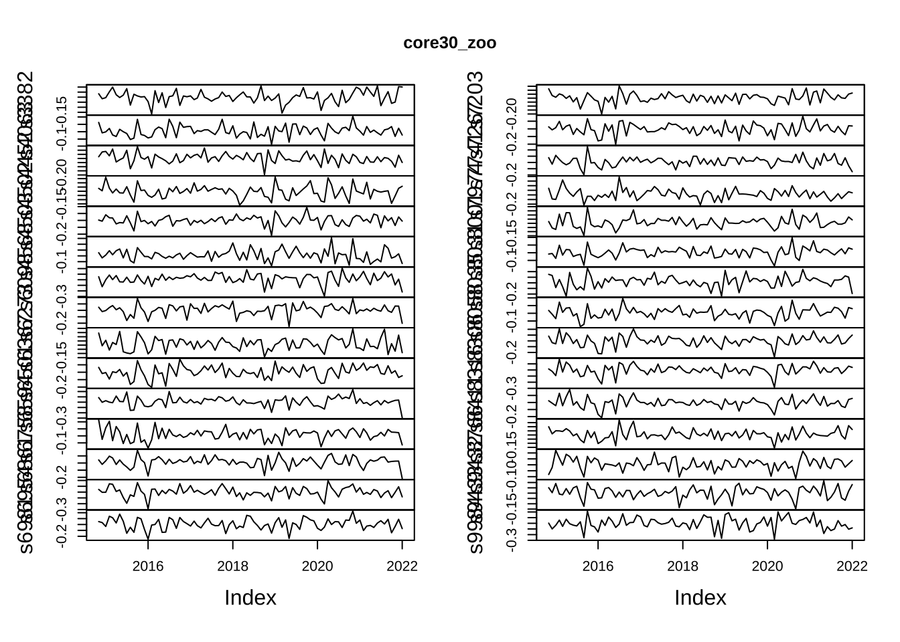
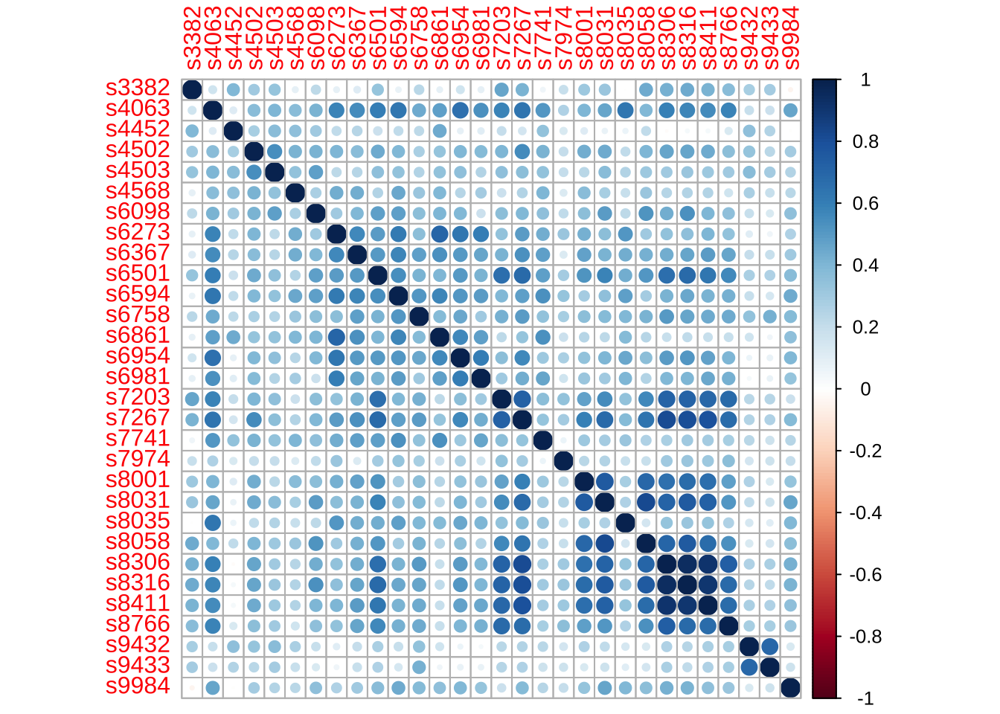
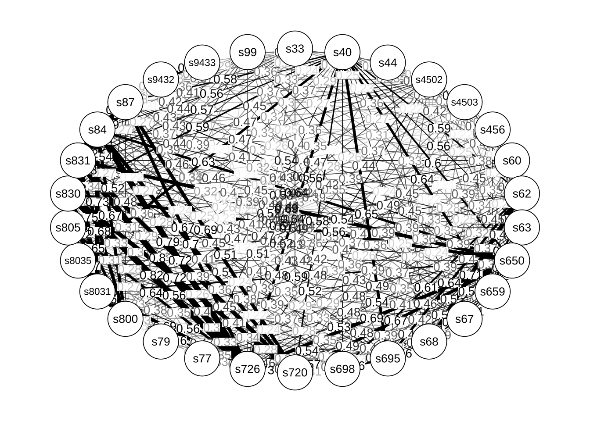
上で行ったのと同様, ここでは関数vss()を実行し, 因子分析で指定する因子の数を決める.
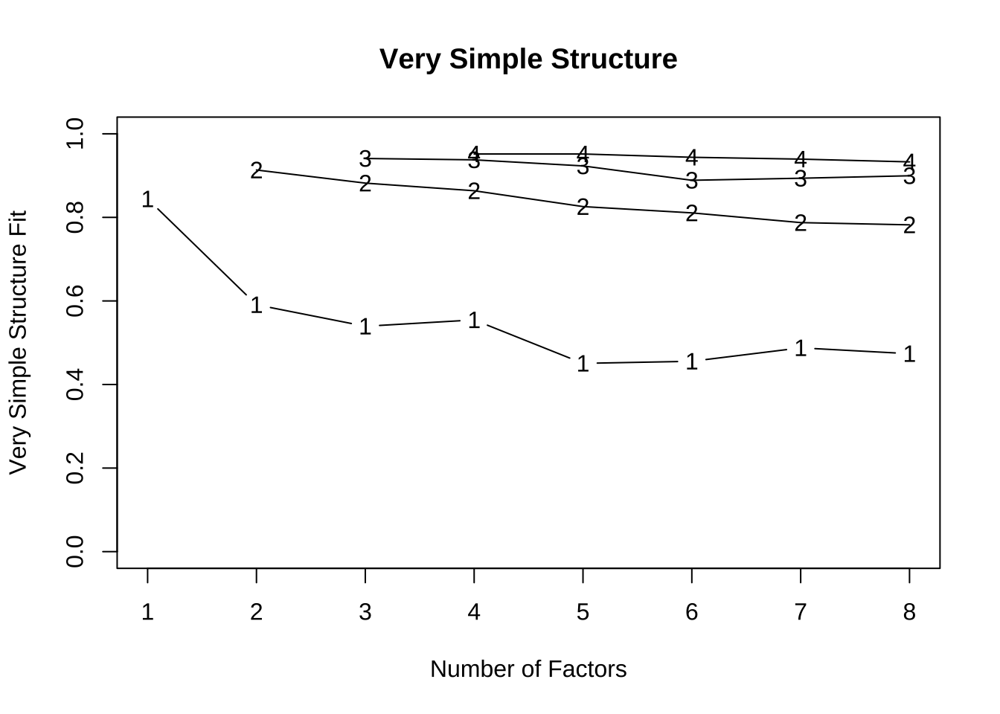
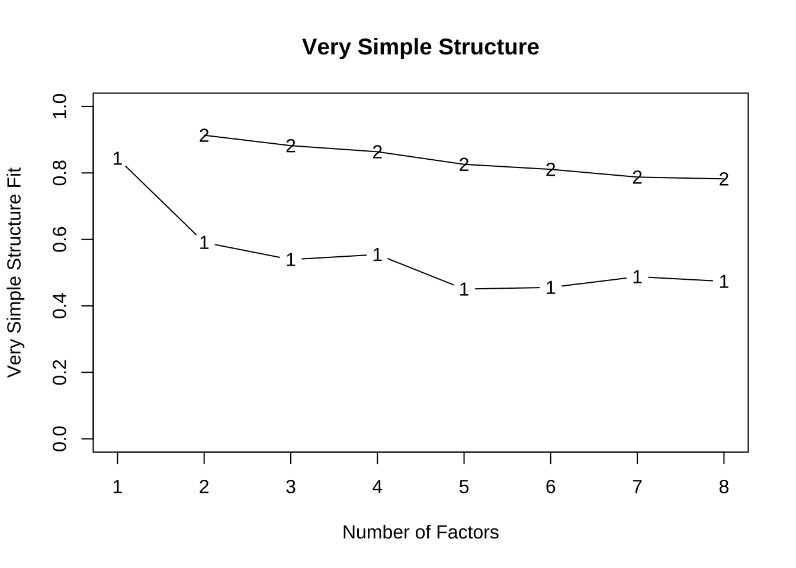
print(tmp_vss)
#>
#> Very Simple Structure
#> Call: vss(x = core30, fm = "ml")
#> VSS complexity 1 achieves a maximimum of 0.84 with 1 factors
#> VSS complexity 2 achieves a maximimum of 0.91 with 2 factors
#>
#> The Velicer MAP achieves a minimum of 0.02 with 5 factors
#> BIC achieves a minimum of -1125.07 with 2 factors
#> Sample Size adjusted BIC achieves a minimum of -103.38 with 7 factors
#>
#> Statistics by number of factors
#> vss1 vss2 map dof chisq prob sqresid fit RMSEA BIC SABIC complex
#> 1 0.84 0.00 0.043 405 852 5.7e-34 27.4 0.84 0.112 -957 321.1 1.0
#> 2 0.59 0.91 0.026 376 554 5.7e-09 15.2 0.91 0.073 -1125 61.3 1.5
#> 3 0.54 0.88 0.022 348 447 2.5e-04 10.4 0.94 0.056 -1107 -8.7 1.7
#> 4 0.55 0.86 0.021 321 358 7.4e-02 8.5 0.95 0.035 -1075 -62.3 1.9
#> 5 0.45 0.83 0.021 295 303 3.6e-01 7.1 0.96 0.014 -1014 -83.2 2.1
#> 6 0.46 0.81 0.023 270 258 6.8e-01 6.2 0.96 0.000 -947 -95.5 2.2
#> 7 0.49 0.79 0.025 246 219 8.9e-01 5.9 0.97 0.000 -880 -103.4 2.2
#> 8 0.47 0.78 0.027 223 191 9.4e-01 5.1 0.97 0.000 -805 -101.5 2.2
#> eChisq SRMR eCRMS eBIC
#> 1 1208 0.126 0.131 -601
#> 2 466 0.078 0.084 -1214
#> 3 238 0.056 0.063 -1316
#> 4 162 0.046 0.054 -1272
#> 5 115 0.039 0.047 -1203
#> 6 89 0.034 0.044 -1116
#> 7 81 0.033 0.044 -1017
#> 8 61 0.028 0.040 -935ここでは, 因子の数\(=2\)とし,
fa()を斜交回転の一つであるpromax回転 (rotate = "promax"),
推定方法は最小残差法 (fm = “minres”) で実行した例を示す.
core30_fa <- fa(r = core30, nfactors = 2, rotate = "promax", fm = "minres", scores = T)
core30_fa
#> Factor Analysis using method = minres
#> Call: fa(r = core30, nfactors = 2, rotate = "promax", scores = T, fm = "minres")
#> Standardized loadings (pattern matrix) based upon correlation matrix
#> MR1 MR2 h2 u2 com
#> s3382 0.63 -0.22 0.26 0.74 1.2
#> s4063 0.23 0.63 0.64 0.36 1.3
#> s4452 -0.08 0.40 0.12 0.88 1.1
#> s4502 0.33 0.34 0.37 0.63 2.0
#> s4503 0.21 0.35 0.26 0.74 1.6
#> s4568 -0.03 0.55 0.28 0.72 1.0
#> s6098 0.32 0.32 0.34 0.66 2.0
#> s6273 -0.11 0.86 0.63 0.37 1.0
#> s6367 0.13 0.63 0.52 0.48 1.1
#> s6501 0.54 0.31 0.61 0.39 1.6
#> s6594 -0.03 0.81 0.63 0.37 1.0
#> s6758 0.30 0.38 0.38 0.62 1.9
#> s6861 -0.36 1.01 0.68 0.32 1.2
#> s6954 0.13 0.62 0.51 0.49 1.1
#> s6981 0.02 0.64 0.42 0.58 1.0
#> s7203 0.77 0.01 0.60 0.40 1.0
#> s7267 0.78 0.13 0.76 0.24 1.1
#> s7741 -0.07 0.70 0.43 0.57 1.0
#> s7974 0.27 0.14 0.14 0.86 1.5
#> s8001 0.71 0.03 0.52 0.48 1.0
#> s8031 0.85 -0.05 0.66 0.34 1.0
#> s8035 -0.02 0.60 0.35 0.65 1.0
#> s8058 0.86 -0.11 0.62 0.38 1.0
#> s8306 1.04 -0.15 0.89 0.11 1.0
#> s8316 1.02 -0.12 0.90 0.10 1.0
#> s8411 0.97 -0.09 0.83 0.17 1.0
#> s8766 0.73 0.04 0.57 0.43 1.0
#> s9432 0.27 0.12 0.12 0.88 1.4
#> s9433 0.30 0.04 0.11 0.89 1.0
#> s9984 0.21 0.35 0.26 0.74 1.6
#>
#> MR1 MR2
#> SS loadings 8.26 6.16
#> Proportion Var 0.28 0.21
#> Cumulative Var 0.28 0.48
#> Proportion Explained 0.57 0.43
#> Cumulative Proportion 0.57 1.00
#>
#> With factor correlations of
#> MR1 MR2
#> MR1 1.00 0.65
#> MR2 0.65 1.00
#>
#> Mean item complexity = 1.2
#> Test of the hypothesis that 2 factors are sufficient.
#>
#> The degrees of freedom for the null model are 435 and the objective function was 25.58 with Chi Square of 1922.9
#> The degrees of freedom for the model are 376 and the objective function was 7.72
#>
#> The root mean square of the residuals (RMSR) is 0.08
#> The df corrected root mean square of the residuals is 0.08
#>
#> The harmonic number of observations is 87 with the empirical chi square 436.07 with prob < 0.018
#> The total number of observations was 87 with Likelihood Chi Square = 569.86 with prob < 3.9e-10
#>
#> Tucker Lewis Index of factoring reliability = 0.846
#> RMSEA index = 0.076 and the 90 % confidence intervals are 0.064 0.09
#> BIC = -1109.33
#> Fit based upon off diagonal values = 0.97
#> Measures of factor score adequacy
#> MR1 MR2
#> Correlation of (regression) scores with factors 0.99 0.97
#> Multiple R square of scores with factors 0.98 0.94
#> Minimum correlation of possible factor scores 0.95 0.882因子の解釈を容易にするため, 因子負荷量の可視化を行う.
par(mfrow = c(1, 2))
barplot(core30_fa$loading[, 1], col = "orange")
barplot(core30_fa$loading[, 2], col = "lightblue")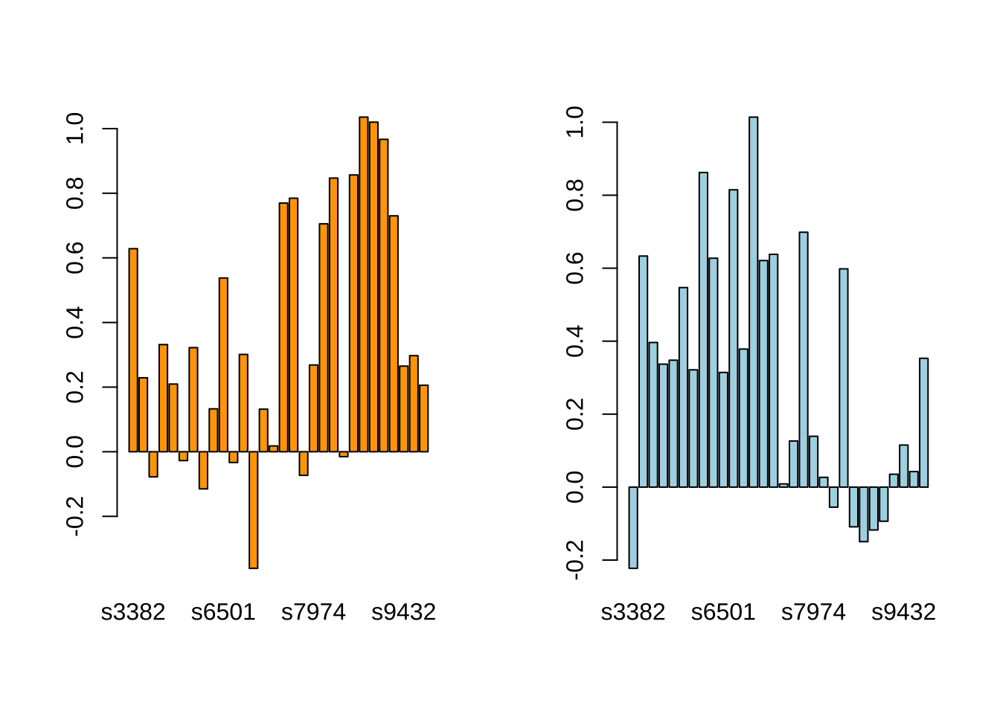
因子間の関係性 (相関構造や階層構造) についても可視化を行う.
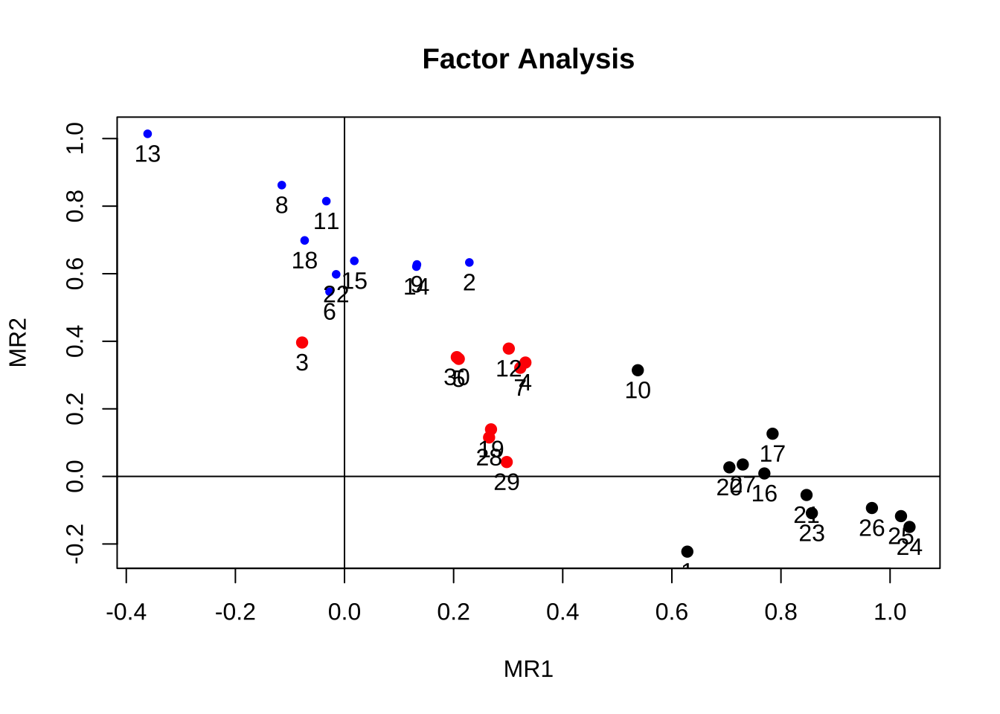
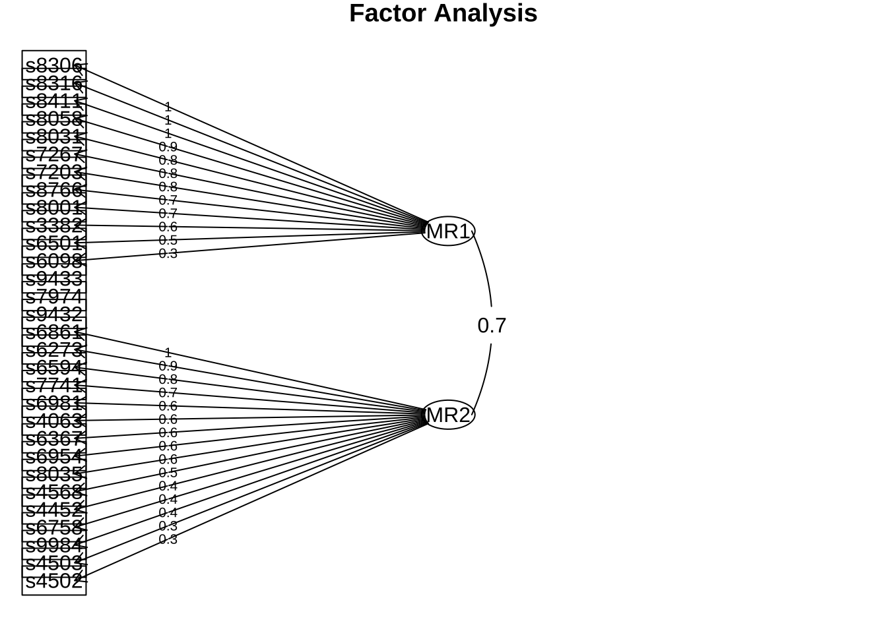
この結果からは, ざっくり言えば, 2因子は銘柄コードの小さいグループ内, 大きいグループ内の銘柄間の相関性をもたらす因子であると解釈できる. また, (斜交回転の帰結として) 二つの因子間には0.7の相関があることも分かる.
一方, 直交回転 (varimax) の場合には, 得られる因子の構造が 斜交回転 (promax) の場合と相当異なることが確認できる.
par(mfrow = c(1, 2))
barplot(core30_fa_2$loading[, 1], col = "orange")
barplot(core30_fa_2$loading[, 2], col = "lightblue")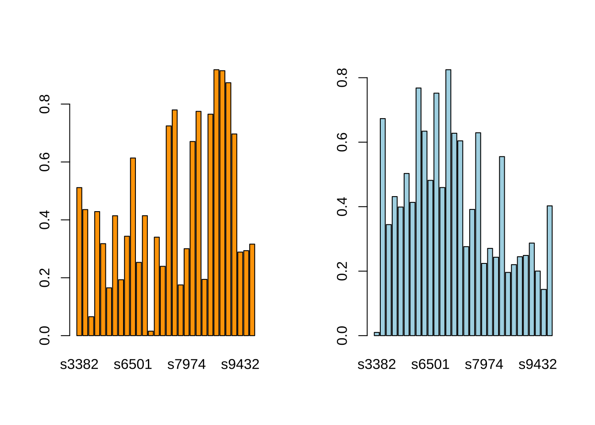
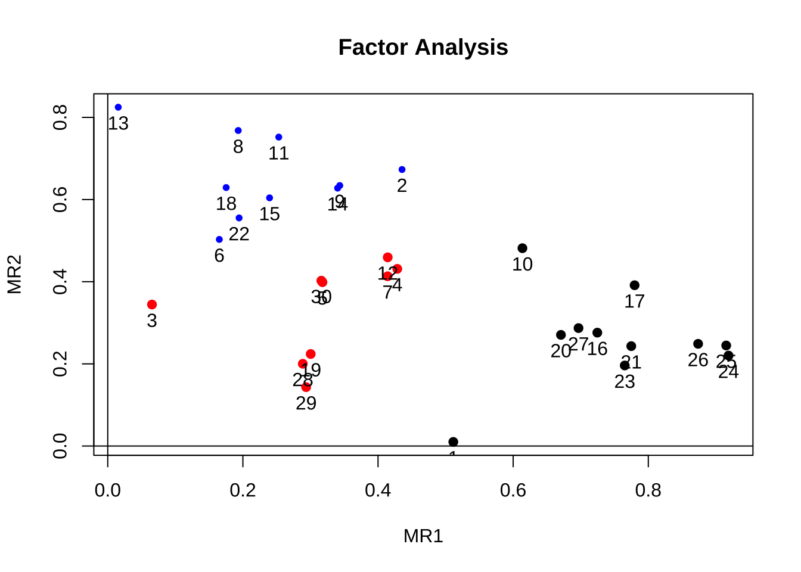
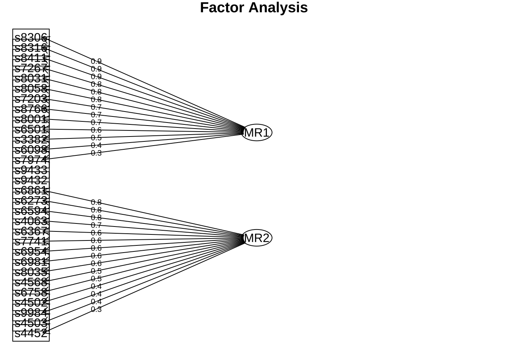
因子分析の結果得られた, 各データ点 (年月) の因子得点は, 各々の年月の特徴を2因子で表現したものとなっている.
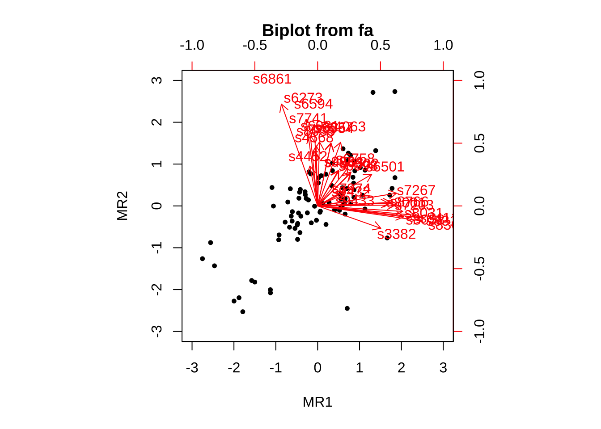
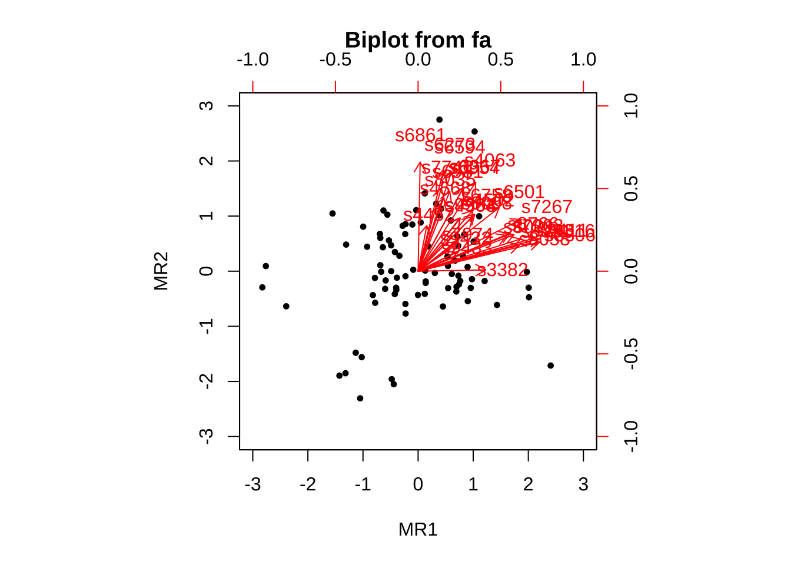